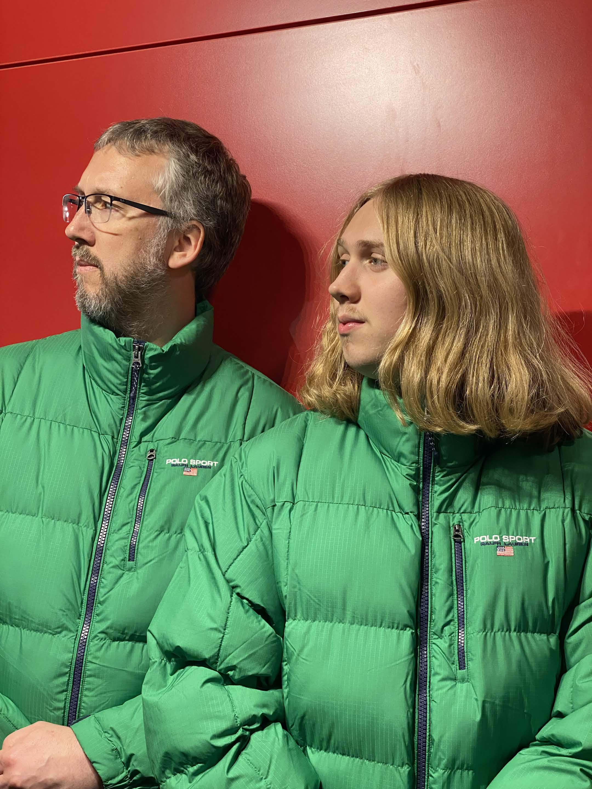

Text can be given different colors
Borders can also be added around text
Colors can be set in:
RGB
HEX
HSL
You can also set colors that include an alpha using:
RGBA
HSLA
Grey shades can be made by putting all three inputs as the same number
Link to another html document with local url
 Images can be aligned around text, to the left here
Images can be aligned around text, to the left here
Images can be aligned around text, to the right here

The image below will adjust depending on the width of the browser!